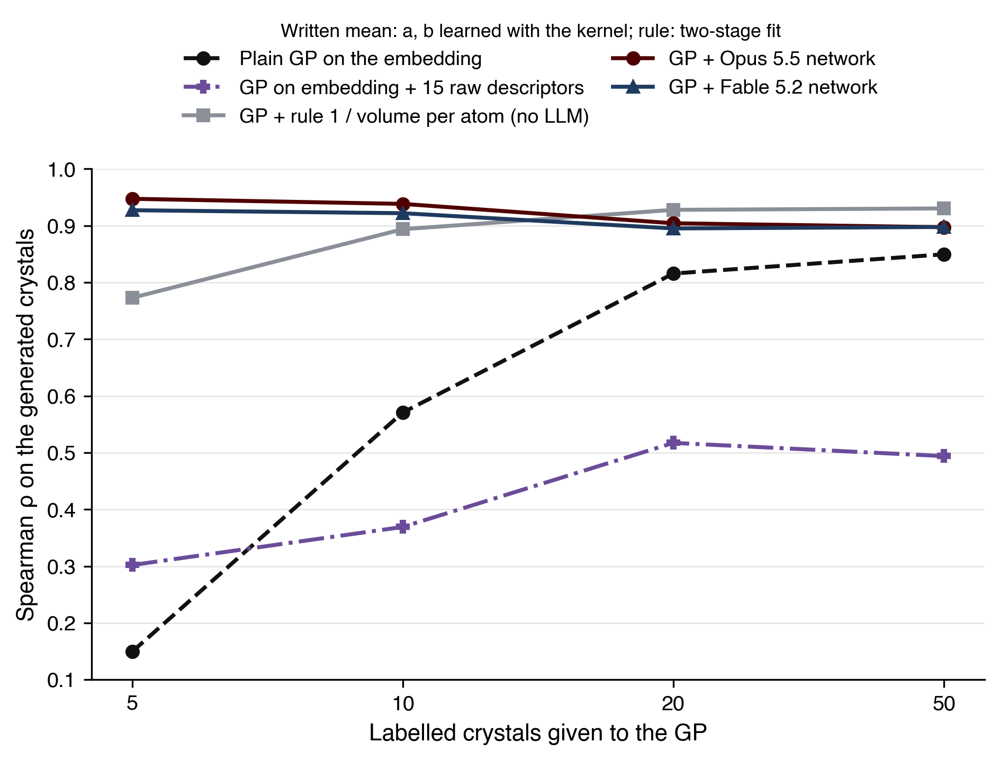

MATERIALS SCIENCE & ENGINEERING
TEXAS A&M UNIVERSITY
Department of Materials Science and Engineering
66

ρ at 5 / 10 / 20 / 50 labels
plain GP: 0.15 / 0.57 / 0.82 / 0.85
+ descriptors: 0.30 / 0.37 / 0.52 / 0.49
rule (2-stage): 0.77 / 0.89 / 0.93 / 0.93
Opus (joint): 0.95 / 0.94 / 0.90 / 0.90
Fable (joint): 0.93 / 0.92 / 0.90 / 0.90